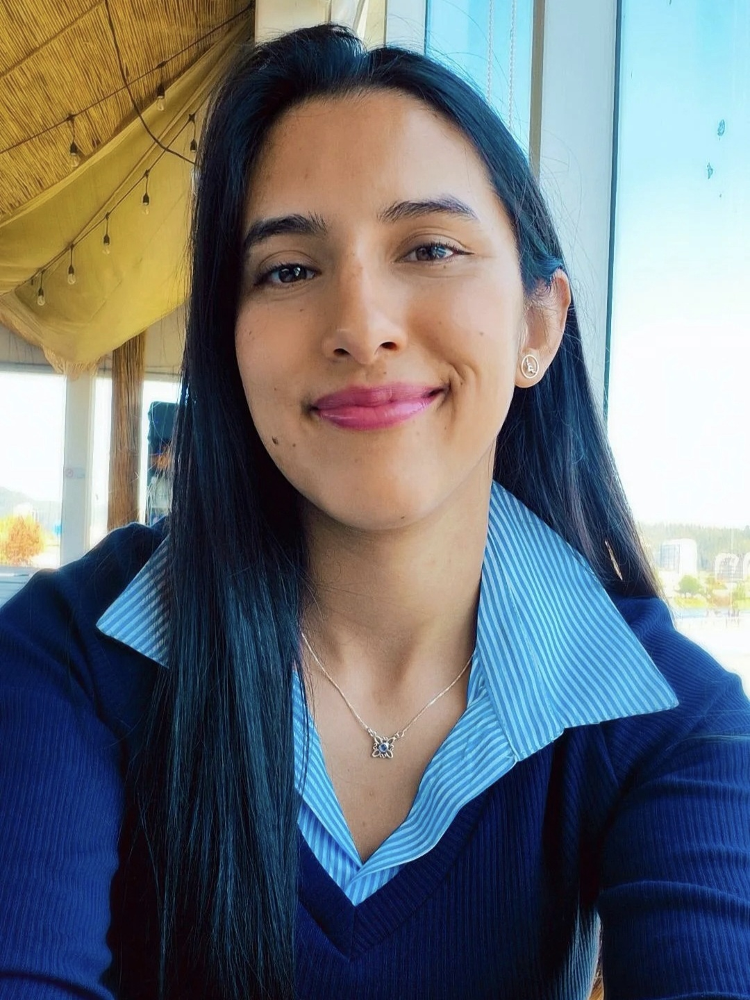

Ingeniera Ejecución Industrial
Profesional con más de 7 años de experiencia multidisciplinaria en caracterizaciones químicas, contribuyendo a la mejora de productos y procesos en distintas industrias. Realiza verificaciones de proceso y desarrollo de instructivos de trabajo. Control estadístico del monitoreo operativo de minerales. Manejo avanzado de técnicas analíticas, incluidas cromatografía y espectrometría, optimizando la precisión en el laboratorio. Ha trabajado en el desarrollo de biopolímeros innovadores y en la implementación de buenas prácticas de laboratorio, garantizando la calidad y confiabilidad del resultado final
Rayen Ailyn Carrillo Torres
Domicilio: Avenida Cristóbal Colón 8551
Población:Condominio Cúmbres
Código Postal: 43000
CI: 18.389.364-5
Fecha de nacimiento: 30-10-1993
Teléfono: (56) 962577512
2023. Ingeniera Ejcución Industrial
2020. Químico Analista
2024 Técnicas y estrategias de gestión de la innovación 120h, Centro de Desarrollo Neotec SpA.
2024 Emprendimiento Social 30h, Sence - IPChile.
2024 Design Thinking-25h-Sense UPLA – 2024 - Herramientas de ofimática 80h, BCN School SpA.
2023 Tratamientos térmicos de globulización en aceros de baja y media aleación 20h, Universidad de Concepción.
2023 Protección Radiológica-Autorización de desempeño MINSAL Instituto de Protección Radiológica.
Español Nativo
2022-2024 Siderúrgica Huachipato
2018-2022 Laboratorio de Oceanografía Química Universidad de Concepción
2018 Laboratorio Químico Bureau Veritas
2017 Departamento de Polímeros Universidad de Concepción
2014 Departamento de Instrumental Universidad de Concepción